Example Gallery
The examples on this page have no closed-form solution to compare against — they show the kind of realistic or illustrative output the package produces rather than a validation. For examples tested against an analytical or semi-analytical solution instead, see Benchmarks.
From the paper
All figures in this section are reproduced from [1] (© Author(s) 2025, distributed under the Creative Commons Attribution 4.0 License) by its authors; see List of examples for how every example maps to a paper figure, and the caption of each figure below for which script reproduces it.
B6 — Spherical crystal growth with a decreasing $K_D$
Chemical zoning produced by simultaneous growth and diffusion as the distribution coefficient decreases over the run ($V_{ip} > 0$).
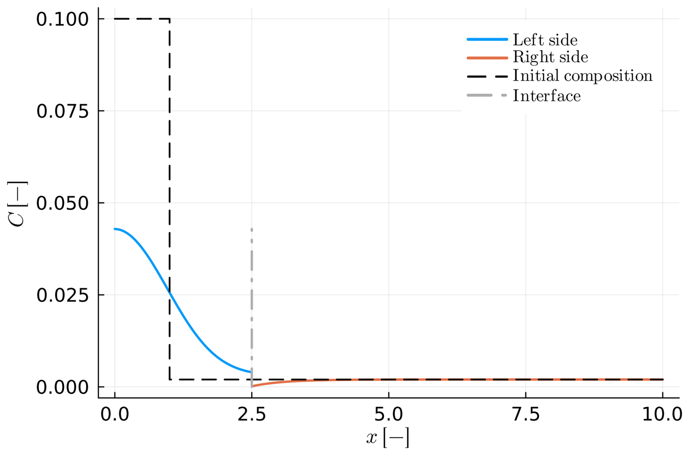
Figure 8 of [1], reproduced byB6.jl.B7 — Spherical crystal resorption
The resorption case ($V_{ip} < 0$): pronounced compositional gradients at the consuming interface.
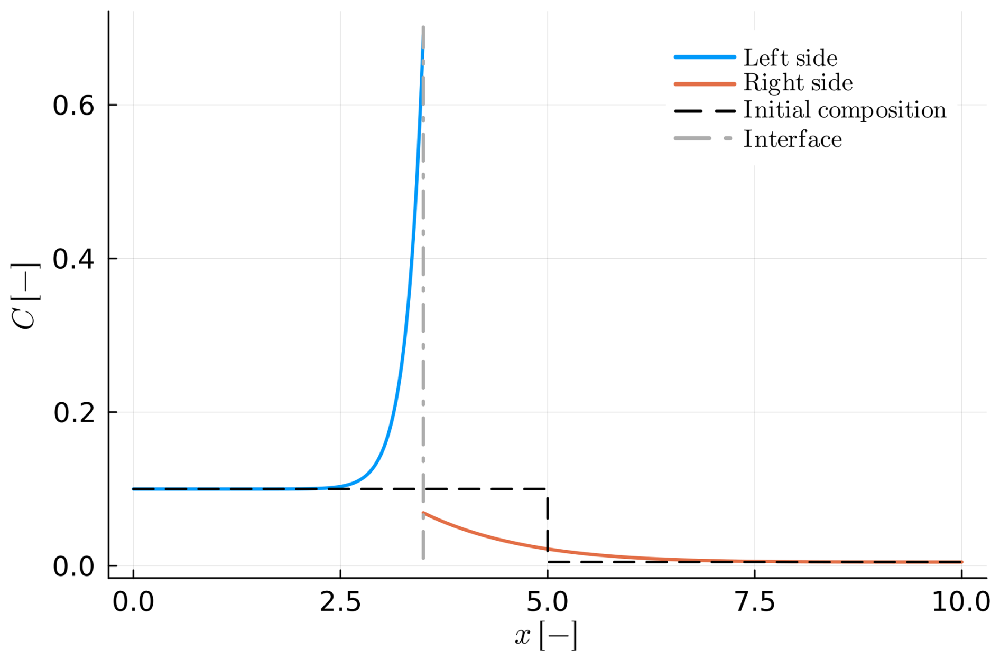
Figure 9 of [1], reproduced byB7.jl.C2 — Resorption via the total mass-balance condition
The same idea as B7, solved with the total mass-balance interface condition (set_inner_bc_mb!) instead of the flux-balance one.
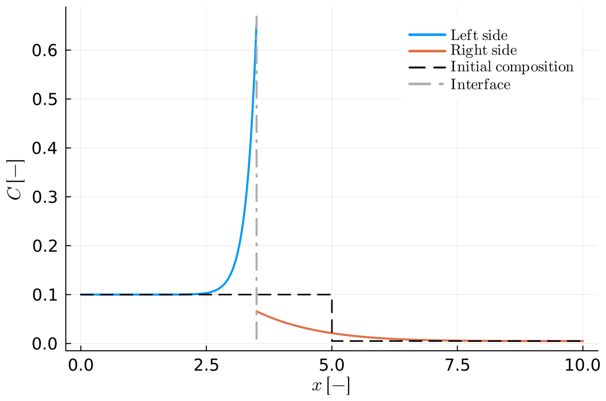
Figure C2 of [1], reproduced byC2.jl.D1 — Diffusion-limited olivine crystallization
The thermodynamically constrained (Stefan) family applied to a realistic geologic case: olivine crystallizing on cooling, with the modelled composition profile and the equilibrium interface compositions traced on the phase-diagram section (see The (chemical) Stefan Problem).
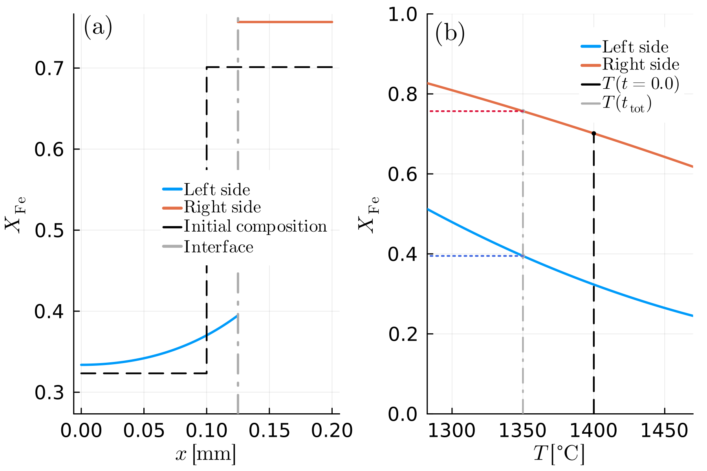
Figure 10 of [1], reproduced byD1.jl.D1.jl (and D2.jl) used cos() (radians) instead of cosd() (degrees) for the crystallographic angles alpha/beta/gamma, which are degrees everywhere else in the package. With that fixed, the effective diffusion coefficient D_l is about 6.7% lower than before for the default angles shown here (alpha=0°, beta=90°, gamma=90°) - see CHANGELOG.md for the full explanation. The figure above reflects the fix, so it differs slightly from the version published in [1].
D2 (non-monotonic temperature path) isn't part of the paper — see below for its own figure instead.
Templates and tutorial examples
The figures in this section aren't from the paper — they're generated directly from running the corresponding example script, showing the same main_codes/ templates the General Remarks page describes, in increasing order of complexity (see Getting Started for a full walkthrough starting from Simple_Diff).
Simple_Diff — Single-crystal diffusion
Diffusion of a fixed-composition boundary source into a homogeneous, semi-infinite planar crystal — no moving boundary, no second phase, the simplest problem the package can solve.
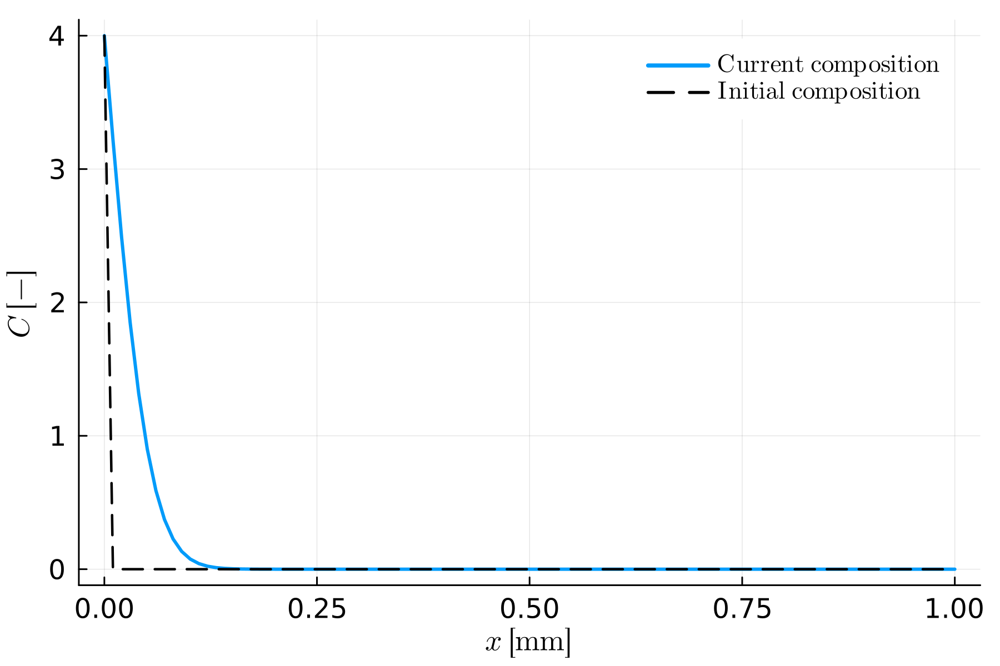
Generated bySimple_Diff.jl.Diff_couple_no_interaction — Two independent single crystals
Two single crystals with sinusoidal initial profiles, diffusing side by side with no interface reaction between them — each side is independently benchmarked against its own analytical solution.
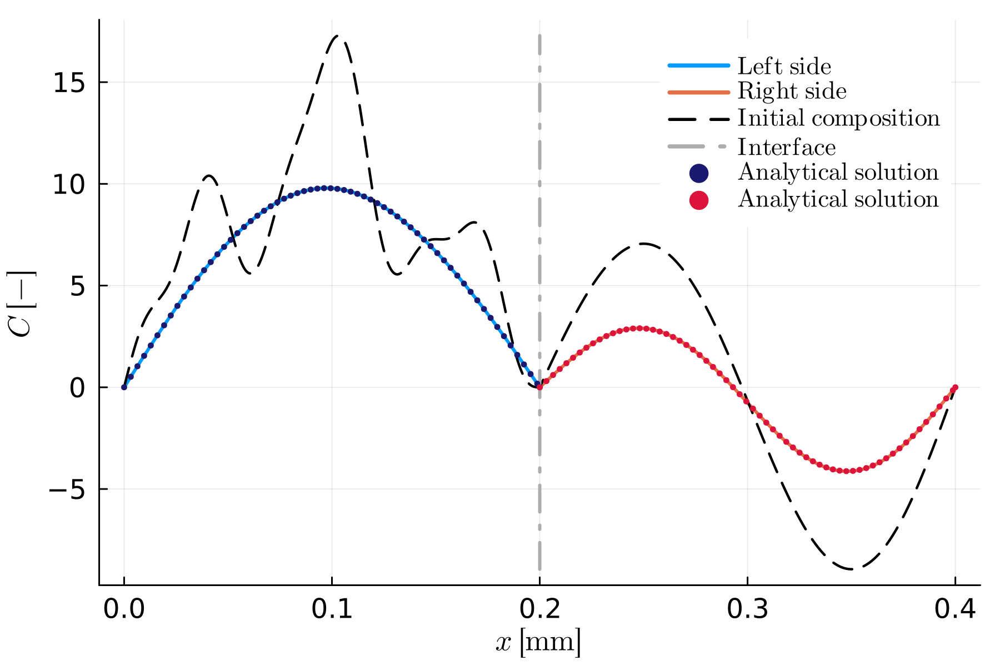
Generated byDiff_couple_no_interaction.jl.Diff_couple_Flux — Diffusion couple, flux-balance condition
A true diffusion couple with a stationary interface (no prescribed growth), solved with the flux-balance interface condition (set_inner_bc_flux!).
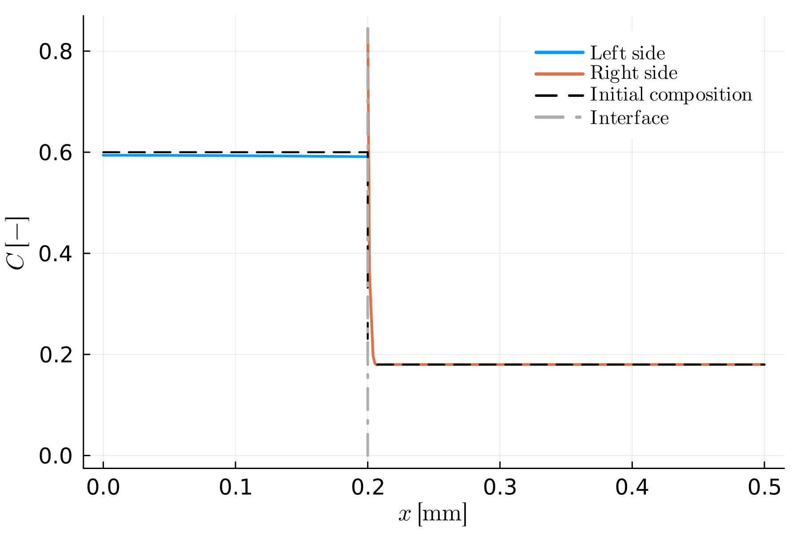
Generated byDiff_couple_Flux.jl.Diff_couple_MB — Diffusion couple, total mass-balance condition
The same stationary-interface diffusion couple, solved with the total mass-balance interface condition (set_inner_bc_mb!) instead.
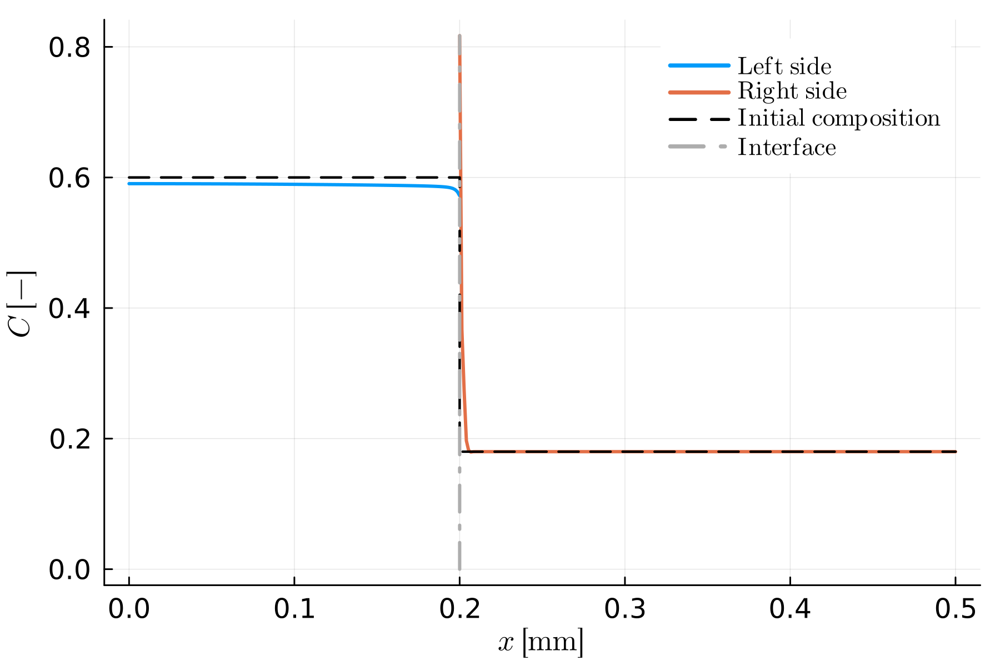
Generated byDiff_couple_MB.jl.Diff_couple_Flux_growth — Diffusion couple with growth, flux-balance condition
The flux-balance diffusion couple with the interface additionally prescribed to move ($V_{ip} \neq 0$) — the interface has visibly shifted from its initial position by the end of the run.
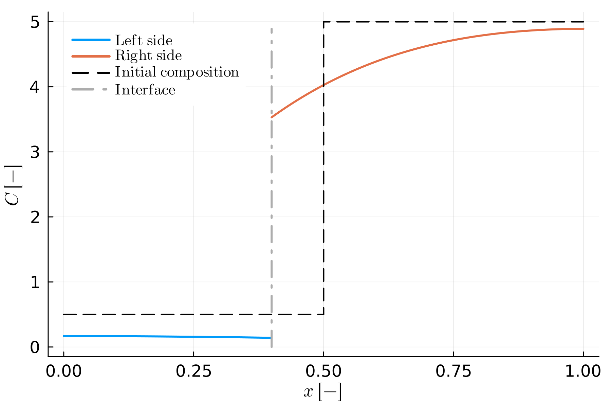
Generated byDiff_couple_Flux_growth.jl.Diff_couple_MB_growth — Diffusion couple with growth, total mass-balance condition
The same idea, solved with the total mass-balance interface condition instead.
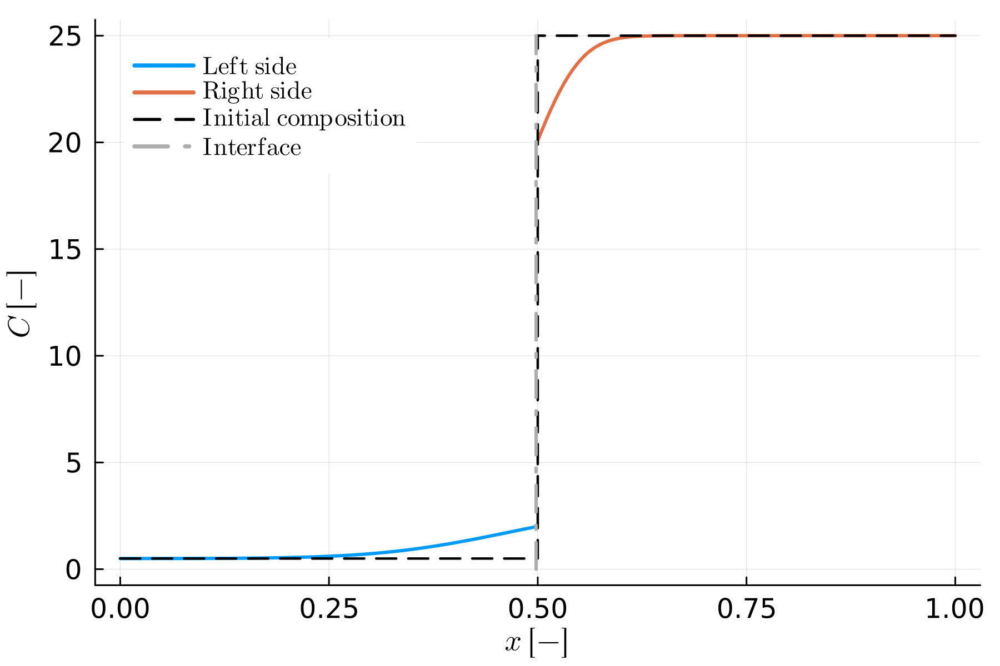
Generated byDiff_couple_MB_growth.jl.D2 — Thermodynamically constrained growth with a non-monotonic T-t path
The same thermodynamically constrained (Stefan) physics as D1.jl, but driven by an arbitrary, non-monotonic temperature-time path instead of linear cooling - here, a fall, a plateau, then a gentle rise (a rough analogue of a magma chamber cooling and crystallizing, pausing, then getting a small recharge pulse that drives brief resorption). Panel (a) shows the final composition profile; panel (b) traces the interface compositions against the phase diagram over the whole path.
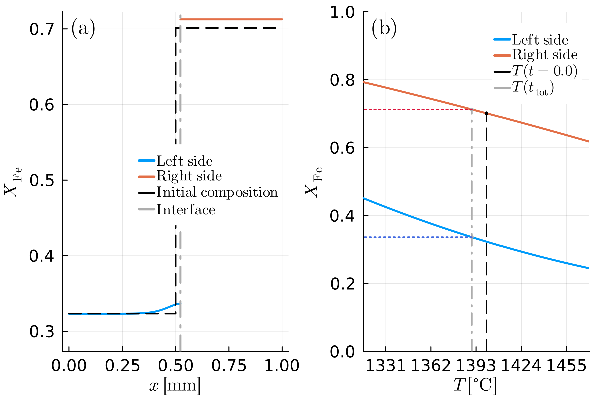
Generated byD2.jl.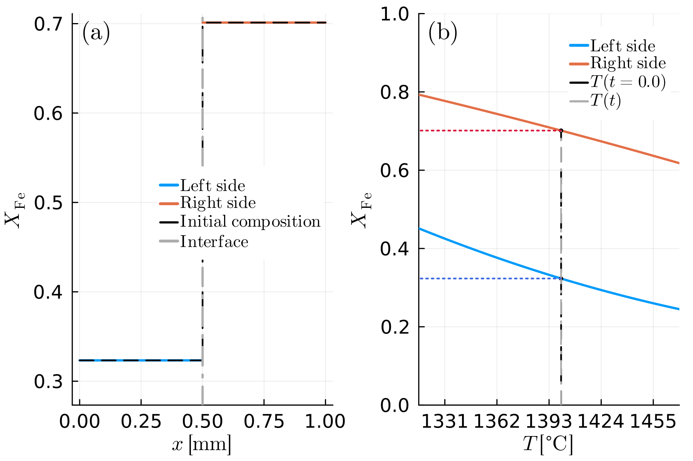
The same run, animated (animate_sim = true) - the composition profile and interface trace evolving over the whole T-t path.